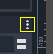
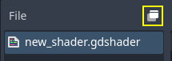
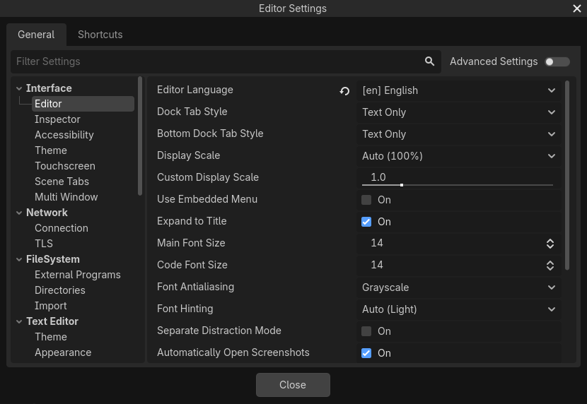

Tùy chỉnh giao diện
Theo mặc định, giao diện của Godot nằm trong một cửa sổ duy nhất. Từ Godot 4.0, bạn có thể tách một số thành phần ra các cửa sổ riêng để tận dụng tốt hơn thiết lập nhiều màn hình.
Di chuyển và thay đổi kích thước dock
Nhấp và kéo cạnh của bất kỳ dock hoặc panel nào để thay đổi kích thước theo chiều ngang hoặc chiều dọc:

Thay đổi kích thước dock trong trình chỉnh sửa
Nhấp vào biểu tượng "3 chấm dọc" ở đầu bất kỳ dock nào để thay đổi vị trí của nó, hoặc tách nó ra một cửa sổ riêng bằng cách chọn Make Floating trong menu con hiện ra:

Di chuyển dock trong trình chỉnh sửa
Để đưa một dock nổi trở lại cửa sổ trình chỉnh sửa, hãy đóng cửa sổ dock bằng nút × ở góc trên bên phải cửa sổ (hoặc góc trên bên trái trên macOS). Ngoài ra, bạn có thể nhấn Alt + F4 khi cửa sổ tách rời đang được focus.
Tách trình chỉnh sửa script hoặc shader ra cửa sổ riêng
Ghi chú
Tính năng này chỉ có trên các nền tảng hỗ trợ mở nhiều cửa sổ: Windows, macOS và Linux.
Tính năng này cũng không khả dụng nếu Single Window Mode được bật trong Editor Settings.
Từ Godot 4.1, bạn có thể tách trình chỉnh sửa script hoặc shader ra cửa sổ riêng.
Để tách trình chỉnh sửa script ra cửa sổ riêng, hãy nhấp vào nút tương ứng ở góc trên bên phải của trình chỉnh sửa script:

Tách trình chỉnh sửa script ra cửa sổ riêng
Để tách trình chỉnh sửa shader ra cửa sổ riêng, hãy nhấp vào nút tương ứng ở góc trên bên phải của trình chỉnh sửa script:

Tách trình chỉnh sửa shader ra cửa sổ riêng
Để trở lại trạng thái trước (với trình chỉnh sửa script/shader được nhúng trong cửa sổ trình chỉnh sửa), hãy đóng cửa sổ tách rời bằng nút × ở góc trên bên phải cửa sổ (hoặc góc trên bên trái trên macOS). Ngoài ra, bạn có thể nhấn Alt + F4 khi cửa sổ tách rời đang được focus.
Tùy chỉnh bố cục trình chỉnh sửa
Bạn có thể muốn lưu và tải một cấu hình dock tùy theo loại công việc đang làm. Ví dụ, khi làm hoạt ảnh cho nhân vật, việc sắp xếp dock theo cách khác có thể tiện hơn so với khi bạn thiết kế màn chơi.
Vì mục đích này, Godot cung cấp cách lưu và khôi phục bố cục trình chỉnh sửa. Trước khi lưu bố cục, hãy thay đổi các dock mà bạn muốn lưu. Những thay đổi sau sẽ được lưu vào bố cục:
Di chuyển một dock.
Thay đổi kích thước dock.
Chuyển dock thành dạng nổi.
Thay đổi vị trí hoặc kích thước của dock nổi.
Các thuộc tính của FileSystem dock: chế độ chia, chế độ hiển thị, thứ tự sắp xếp, chế độ hiển thị danh sách file, các đường dẫn được chọn và các đường dẫn đang mở rộng.
Sau khi thay đổi, mở menu Editor ở đầu trình chỉnh sửa rồi chọn Editor Layouts > Save. Nhập tên cho bố cục, rồi nhấp Save. Nếu bạn đã lưu một bố cục trình chỉnh sửa trước đó, bạn có thể chọn ghi đè lên bố cục có sẵn bằng danh sách.
Sau khi thay đổi, mở menu Editor ở đầu trình chỉnh sửa rồi chọn Editor Layouts. Trong danh sách thả xuống, bạn sẽ thấy danh sách các bố cục trình chỉnh sửa đã lưu, cùng với Default là bố cục được cố định sẵn và không thể xóa. Bố cục mặc định tương ứng với một bản cài Godot mới, chưa thay đổi vị trí và kích thước dock, và không có dock nổi nào.
Bạn có thể xóa một bố cục bằng tùy chọn Delete trong danh sách thả xuống Editor Layouts.
Mẹo
Nếu bạn đặt tên bố cục đã lưu là Default (phân biệt chữ hoa chữ thường), bố cục trình chỉnh sửa mặc định sẽ bị ghi đè. Lưu ý rằng Default không xuất hiện trong danh sách bố cục để ghi đè cho đến khi bạn ghi đè nó một lần, nhưng bạn vẫn có thể tự nhập tên của nó.
Bạn có thể quay lại bố cục mặc định chuẩn bằng cách xóa bố cục Default sau khi đã ghi đè nó. (Tùy chọn này không xuất hiện nếu bạn chưa ghi đè bố cục mặc định.)
Các bố cục trình chỉnh sửa được lưu vào một file tên editor_layouts.cfg trong đường dẫn cấu hình của Đường dẫn dữ liệu trình chỉnh sửa.
Tùy chỉnh cài đặt trình chỉnh sửa
Trong menu Editor ở phía trên cùng của trình chỉnh sửa, bạn sẽ thấy tùy chọn Editor Settings. Tùy chọn này mở một cửa sổ tương tự Project Settings, nhưng chứa các cài đặt dùng cho trình chỉnh sửa. Các cài đặt này được dùng chung cho mọi dự án và không được lưu trong các file của dự án.

Cửa sổ Editor Settings
Một số cài đặt thường được thay đổi là:
Interface > Editor > Editor Language: Điều khiển ngôn ngữ hiển thị của trình chỉnh sửa. Để dễ theo dõi các bài hướng dẫn tiếng Anh, bạn có thể đổi sang tiếng Anh để tên các menu giống hệt tên được nhắc đến trong bài hướng dẫn. Bạn cũng có thể đổi ngôn ngữ ở góc trên bên phải của project manager.
Interface > Editor > Display Scale: Điều khiển kích thước hiển thị của các thành phần giao diện trên màn hình. Cài đặt mặc định Auto sẽ tìm một giá trị phù hợp dựa trên DPI và độ phân giải màn hình của bạn. Do giới hạn của engine, nó chỉ lấy hệ số tỷ lệ do màn hình cung cấp trên macOS, không áp dụng trên Windows hay Linux.
Interface > Editor > Single Window Mode: Nếu bật, trình chỉnh sửa sẽ buộc phải dùng một cửa sổ duy nhất. Điều này vô hiệu hóa một số tính năng như tách trình chỉnh sửa script/shader ra cửa sổ riêng. Chế độ một cửa sổ có thể ổn định hơn, đặc biệt trên Linux khi dùng Wayland.
Interface > Theme > Preset: Preset giao diện (theme) của trình chỉnh sửa. Preset Light có thể dễ đọc hơn nếu bạn ở ngoài trời hoặc trong phòng có ánh nắng. Preset Black (OLED) có thể giảm tiêu thụ điện trên màn hình OLED, loại màn hình ngày càng phổ biến trên laptop và điện thoại/máy tính bảng.
FileSystem > Directories > Autoscan Project Path: Có thể đặt thành đường dẫn một thư mục sẽ được project manager tự động quét để tìm dự án mỗi khi khởi động.
FileSystem > Directories > Default Project Path: Điều khiển vị trí mặc định nơi các dự án mới được tạo trong project manager.
Editors > 3D > Emulate Numpad: Cho phép dùng hàng phím số 0-9 phía trên trong trình chỉnh sửa 3D như các phím numpad tương ứng. Bạn nên bật tùy chọn này nếu bàn phím của bạn không có bàn phím số.
Editors > 3D > Emulate 3 Button Mouse: Cho phép dùng các phím bổ trợ pan, zoom và orbit trong trình chỉnh sửa 3D ngay cả khi không giữ nút chuột nào. Bạn nên bật tùy chọn này nếu đang dùng trackpad.
Xem tài liệu tham khảo lớp class_EditorSettings để có mô tả đầy đủ về hầu hết các cài đặt trình chỉnh sửa. Bạn cũng có thể di chuột lên tên một cài đặt trong Editor Settings để xem mô tả của nó.